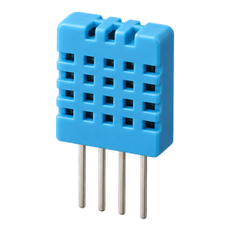
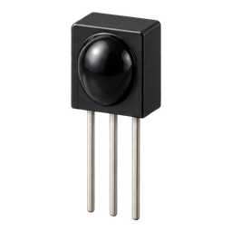

entre o pino e o GND; pull-up interno, sem resistor externo
GPIO 26 · entrada

DHT11 · opcional
temperatura e umidade da telemetria
GPIO 14 · dados

Receptor IR
só na placa clonadora
GPIO 15 · entrada
sinal, no sentido da setanem toda placa teminfravermelhoSó os pinos de sinal do firmware; alimentação, resistores e o acionamento do LED não são definidos no repositório.